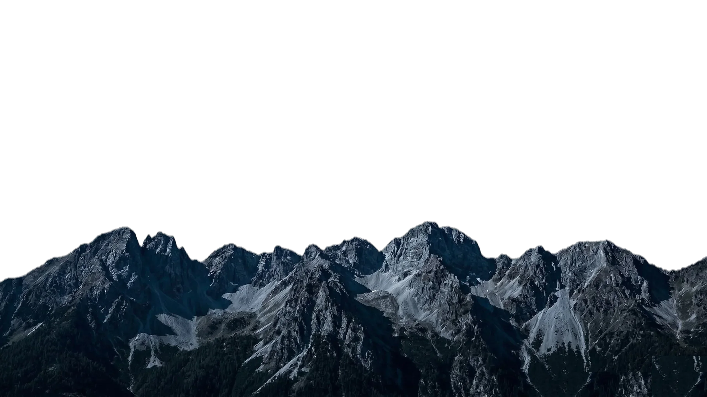
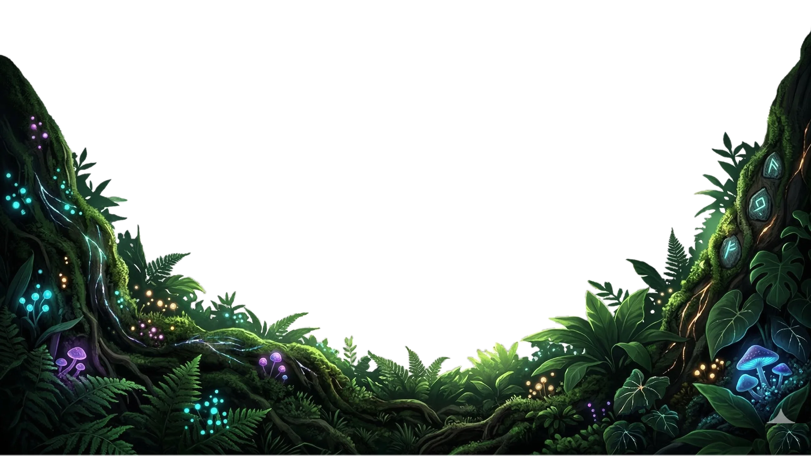

Understand the lunar cycle through interactive simulation
Ever wondered why the Moon changes shape each night? Moon Phases lets you drag the Moon around Earth's orbit and see exactly how its illumination changes — in real time, from both a top-down orbital view and the perspective you see from Earth.
A hands-on way to learn what causes each lunar phase
Drag the Moon around Earth and watch how its position relative to the Sun determines the phase you see.
See the orbital diagram and Earth-view side by side. Understand why the lit side changes as the Moon orbits.
From New Moon to Waning Crescent — each phase comes with a clear explanation of what's happening.
An interactive simulation right on your phone
Free. No ads. No data collection.